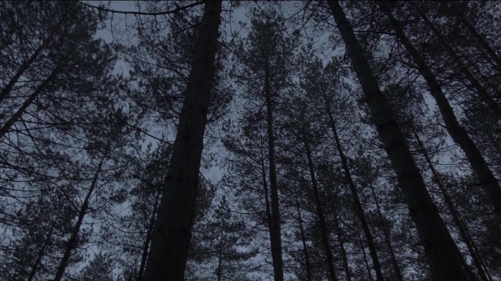

模组概要
导航目录：

星河征途-为了共同的目标而前进着！这是一个基于铁锈战争底层的模组！
她仍然还在成长，欢迎各位的游玩!星河征途-为了共同的目标，我们绝对不会退缩！
一切的源起：
星河的宇宙曾经是无忧无虑的，但是直到第三个时间线的出现，打破了这里的平衡
银铃：所以说，我们必须去重置时间吗？
？：是的，银铃小姐！这是十万火急的，如果你还想让蒂拉活着！
银铃：我当然知道，但你知道这终究是虚拟环境，会被发现的。
？：但这至少能保证她的成长，他们不会那么快找到这里。
银铃：或许，这是最好的方法。那么，开始吧，智虫首领：杰诺斯
杰诺斯：是的，银铃时空女帝！
无界的混乱：
妖姬帝国曾经是原名圣莲国，是星河中的一大势力。主要管理者是 圣莲蒂拉
后来，由于旧日政府的一个疯狂实验【蔚蓝行动】，圣莲国的人越来越少，部分人知道旧日的真正意图，但无济于事。
然而，圣莲国的圣莲蒂拉愿意浸泡更久换的其他人的自由。旧日政府很爽快的答应了。
然后，时隔一个月，当人们认为她已经灰飞烟灭的时候。她却从容器中走了出来，并且有着异于常人的力量和特异功能。
旧日政府没有想到会这样，但还是给他们取了好听的名字【妖姬】
随着时间的推移，圣莲蒂拉她救下了一个黑龙。正因为这个问题，一切正在发生变化。
几年后，旧日政府怂恿魔龙去屠杀妖姬。理由是他们影响宇宙的平衡。
与此同时，一个名为起源的帝国正在袭来.......
 妖姬王国被毁，创始人无能为力。但是在最后，她寄宿在一个蝴蝶上面.......
最终，陷入了昏迷.......
妖姬王国被毁，创始人无能为力。但是在最后，她寄宿在一个蝴蝶上面.......
最终，陷入了昏迷.......
当她醒来后，她实在是想不通为什么会这样，愤怒蒙蔽了她的双眼。作为妖姬创始人，她的力量十分可怕，如果失控，后果不堪设想。但就在这么十万火急的情况，三神及时赶到；几乎是同时，宇宙双蒂也同时赶到。
在三神和双蒂的劝说下，她最终控制住了。不过，她希望能可以穿越时空回到过去，阻止妖姬王国的覆灭.....但她怎么知道，这是第五次轮回了......
三神与双蒂告诉她真相，并且说到如果这次再出错，就再也回不来了..........
最终，圣莲蒂拉明白了一切都已经上演过。
于是，她这样说道:"无尽的轮回应该停止，幕后的阴谋应该被阻止。
于是这一次，她不再重置时间线，而在此时此刻，一个叫银铃的人，也正在虚拟化一个环境。没有错，这个环境正是一种模拟战争。

几乎在同时，一个神秘人邀请幕后黑手去喝下午茶......
最终他们在下午茶的时候，神秘人对他说道，我知道你的身份，也知道你的目的，你不用管我是谁，但如果你敢再动她一根毫毛，你的计划将会失败。
而在后面，魔龙帝国也被旧日政府摧毁了。但他遇见了三神中最强战力果源圣母，也就是小果果
最终小果果与魔龙达成一致协议，一定要发展自己的帝国，并且在以后复仇。
 由于那个模拟环境里面不是那么容易被发现的，因此他们在里面进行模拟战争已经持续了一段时间，而就在最近，结界已经有所裂痕，看来一切即将进行下一次的轮回。
由于那个模拟环境里面不是那么容易被发现的，因此他们在里面进行模拟战争已经持续了一段时间，而就在最近，结界已经有所裂痕，看来一切即将进行下一次的轮回。
四个阵营:
智虫帝国 旁观者清
妖姬风暴 主要事件者
魔龙古国 当局者迷
旧日神教 被操控者
敌对阵营:
起源帝国:西杰诺瓦
宇宙阵营:
莉灵星蒂，宇宙双蒂，三神守护者
妖姬阵营:圣莲蒂拉
魔龙阵营:小果果，尼德霍格
旧日阵营:斯诺以太，伊吉斯
智虫阵营:杰诺斯
-
五界时间线:
- 模拟世界线 管理者:银铃
- 旧宇宙 管理者:宇宙双蒂
- 新宇宙 管理者:三神
- 前世时间线 管理者:星蒂
- 现实时间线 管理者:西杰诺瓦